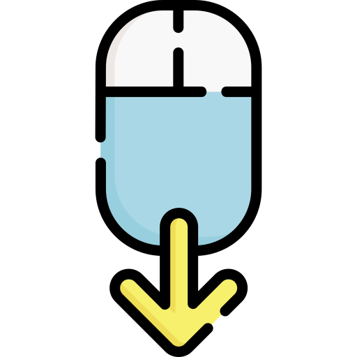

Welthungerhilfe (WHH)/ registered as German Agro Action (GAA) in Ethiopia is one of the biggest private development organizations in Germany with development and relief aid projects in more than 40 countries. Non-profit, non-political and non-denominational organization that works under the leadership of an honorary board and the patronage of the German Federal President. GAA runs a Regional Office for the Horn of Africa, based in Addis Ababa, Ethiopia and is successfully operating in the country since 1972. GAA Ethiopia Country Office has a plan to implementing district wide WASH System Strengthening projects in different parts of the country. Currently, piloting of WASH System approach has been on going in few districts.
As an implementer of WASH System Strengthening project, we have exercised orientation, basic training, and training on building blocks to the concerned government staff at different levels. Moreover, we have prepared a monitoring tool for WASH facilities than can be handled by the district level offices. And capacity building to government offices on monitoring of WASH facilities has been implemented. We are striving to make available of WASH facilities inventory data of our intervention area to everyone (which is expected to be a test model for national WASH inventory that is usually led by the ministry of Water and Energy). The WASH facilities inventory data must be compiled and prepared in such a way that it can be easily updated by the concerned Woreda level offices and disclosed to everyone for the benefit of concerned stakeholders. The WASH facilities’ data to be updated in a regular basis and made available to everyone via a website.
Systems strengthening means making sure that all the main building blocks of a strong WASH system are in place and functioning to a minimum level. Putting these building blocks in place isn't a one-off activity. It's a never-ending process of strengthening and adaptation. By assessing the status of each building block and the linkages between them, WASH practitioners can identify weak points and target their interventions for greater effect.
-- Wash System Academy